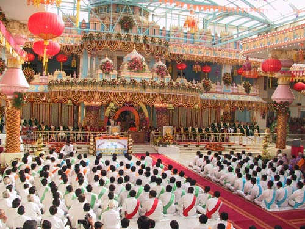

- Bhagawan Sri Sathya Sai Baba
Sri Sathya Sai Central Trust has constructed a number of convention centers where cultural programmes, symposia and conferences are conducted. The Sai Kulwant hall at Prasanthi Nilayam has been the venue for a host of programmes that span a wide spectrum of cultures and religious traditions from all over the world. A number of conferences have also been held here on various occasions, such as The All India Vice-Chancellor’s Conference in November 2003, Sai Interfaith Conference and International Sai Medical Conference in 2005.
Apart from the above, 11 multipurpose community halls and a number of temples have been constructed in Puttaparthi and surrounding villages, and have been handed over to the local governing bodies. Bhagawan has also constructed a mosque in Puttaparthi.
 The Sanathana Samskruti Museum or the Eternal Heritage Museum at Prasanthi Nilayam promotes one of the cardinal precepts of Bhagawan, the message of the unity of all religions. The exhibits displayed highlight the main teachings of the major religions of the world and also the lives and teachings of great saints and spiritual masters whose mission has been the spiritual uplift of all humanity.
The Sanathana Samskruti Museum or the Eternal Heritage Museum at Prasanthi Nilayam promotes one of the cardinal precepts of Bhagawan, the message of the unity of all religions. The exhibits displayed highlight the main teachings of the major religions of the world and also the lives and teachings of great saints and spiritual masters whose mission has been the spiritual uplift of all humanity.
 The Chaitanya Jyothi Museum at Prasanthi Nilayam was built to commemorate the 75th year of the Advent of the Sathya Sai Avatar and houses an exhibition on His Life and Mission. The building is a fusion of different architectural styles blending Oriental architecture with elements of traditional Indian temple design. With multimedia presentations, and fascinating models and exhibits arranged in seven phases, the museum takes the visitor through the story of Bhagawan’s birth and childhood, and major milestones in the grand Mission of the Avatar.
The Chaitanya Jyothi Museum at Prasanthi Nilayam was built to commemorate the 75th year of the Advent of the Sathya Sai Avatar and houses an exhibition on His Life and Mission. The building is a fusion of different architectural styles blending Oriental architecture with elements of traditional Indian temple design. With multimedia presentations, and fascinating models and exhibits arranged in seven phases, the museum takes the visitor through the story of Bhagawan’s birth and childhood, and major milestones in the grand Mission of the Avatar.
 The Trust runs the Sri Sathya Sai International Centre & School for Human Values at New Delhi for the propagation of the human values of Truth, Right Conduct, Peace, Love and Non-violence by conducting value orientation programmes for school principals, workshops for specific groups of professionals such as bureaucrats, lawyers, doctors, etc on the relevance and practice of human values in their respective professions. It also organizes seminars and lectures on Indian Culture & Spirituality and Unity of Religions, for the general public by eminent personalities from various walks of life.
The Trust runs the Sri Sathya Sai International Centre & School for Human Values at New Delhi for the propagation of the human values of Truth, Right Conduct, Peace, Love and Non-violence by conducting value orientation programmes for school principals, workshops for specific groups of professionals such as bureaucrats, lawyers, doctors, etc on the relevance and practice of human values in their respective professions. It also organizes seminars and lectures on Indian Culture & Spirituality and Unity of Religions, for the general public by eminent personalities from various walks of life.